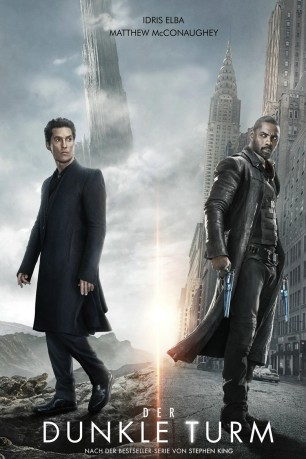
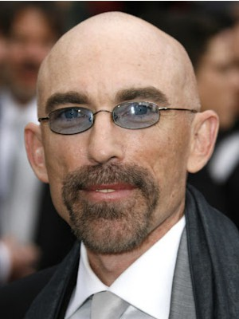
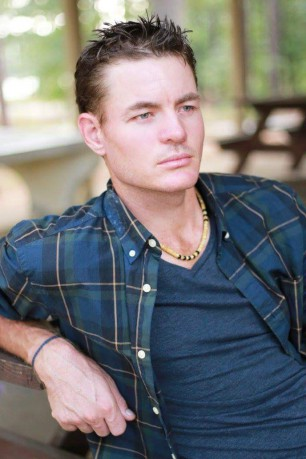
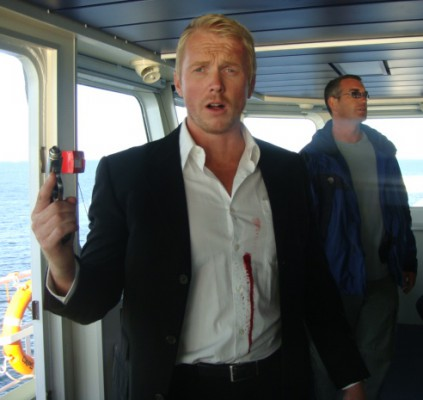

#7541 Der Dunkle Turm
Alternativ: The Dark Tower
 
 IMDB-Wertung: 5.7 / 10
IMDB-Wertung: 5.7 / 10  Metascore: 34
Metascore: 34 
Roland Deschain ist ein Revolvermann. Früher gab es in dem Paralleluniversum, in dem er lebt, mehr Männer seiner Art, doch mittlerweile ist er der einzige, der zwischen dem Mann in Schwarz und dem Dunklen Turm steht, den er beschützen muss. Der Junge Jake lebt in unserer Welt, hat aber Visionen von den Versuchen, den Dunklen Turm zu stürzen. Weil keiner ihm Glauben schenkt, dass die Erde und auch alle anderen Orte des Multiversums in Gefahr sind, begibt er sich allein auf die Suche nach dem Revolvermann.
Jahr: 2017
Dauer: 94 Minuten
FSK: 12
Land: USA Studio: Columbia PicturesTonspuren: DTS - ,
Untertitel: Deutsch, Englisch,
Auflösung: 1080p (1920x800) Größe: 9963 MB
Genre: Action, Horror, Sci-Fi, Abenteuer, Fantasy, Western
Regisseur: Nikolaj Arcel
Drehbuch: Akiva Goldsman
Soundtrack:
Darsteller:
 Matthew McConaughey als Walter
Matthew McConaughey als Walter Idris Elba als Roland
Idris Elba als Roland- Tom Taylor als Jake
 Dennis Haysbert als Steven
Dennis Haysbert als Steven- Ben Gavin als Soldier
- Claudia Kim als Arra
-  Jackie Earle Haley als Sayre
 Fran Kranz als Pimli
Fran Kranz als Pimli- Abbey Lee als Tirana
 Katheryn Winnick als Laurie
Katheryn Winnick als Laurie Nicholas Pauling als Lon
Nicholas Pauling als Lon- Michael Barbieri als Timmy
 José Zúñiga als Dr. Hotchkiss
José Zúñiga als Dr. Hotchkiss Nicholas Hamilton als Lucas Hanson
Nicholas Hamilton als Lucas Hanson- Inge Beckmann als Teacher
- Alfredo Narciso als Ex-Breaker
- Eva Kaminsky als Jill
- Robbie McLean als Toby
- Mark Elderkin als Rat Man
 Karl Thaning als Jake's Dad
Karl Thaning als Jake's Dad- Lemogang Tsipa als Phedon
- Charlize Churcher als Pretty Girl
- Lara Adine Lipschitz als Nurse
- Sara Cicilian als Drunk Girl #1
 Kenneth Fok als Johnny
Kenneth Fok als Johnny Richard Lothian als Fierce Taheen
Richard Lothian als Fierce Taheen- Larry Nuñez als Van Vampire
- Warren Masemola als Bald Old Man
- Emily Child als Herb Woman
- Jabari Gray als Bystander
- Christopher Stein als Big Guard
- Zak Rowlands als Taheen Tech
- Christiaan Schoombie als Young Reactor Man
-  Jay-Jay Botha als Cult Follower , uncredited
 Marmee Regine Cosico als Chinatown Pedestrian , uncredited
Marmee Regine Cosico als Chinatown Pedestrian , uncredited- Adison Eisenberg als Daughter , uncredited
 Paul Riley Fox als Militia , uncredited
Paul Riley Fox als Militia , uncredited- Ella Gabriel als Rose , uncredited
-  Dan Hirst als Village Engineer , uncredited
- De-Wet Nagel als Taheen Tech , uncredited
- Dominique Nieves als Scared Woman , uncredited
- Victoria Nowak als Injured Child , uncredited
- Naomi Poremba als Park Kid , uncredited
 Andre Robinson als Boy in the Park , uncredited
Andre Robinson als Boy in the Park , uncredited- Savana Tardieu als Breaker Kid , uncredited
 Joe Vaz als Worker Taheen , uncredited
Joe Vaz als Worker Taheen , uncredited- Samantha Willoughby als Vampire , uncredited
- Matthew Thomson als Jonah
- Reon Van Der Watt als Tracker Leader
- Robert Whitehead als Cantab
Datei: X:\Person\Stephen King\Dunkle Turm, Der (2017, FSK12, 1920x800).mkv seit 20.11.2017
Festplatte: HD Collection-7+mehr(A-Z)+Person
 Es gibt insgesamt 44 Filme in der Gruppe 'Person\Stephen King'
Es gibt insgesamt 44 Filme in der Gruppe 'Person\Stephen King'